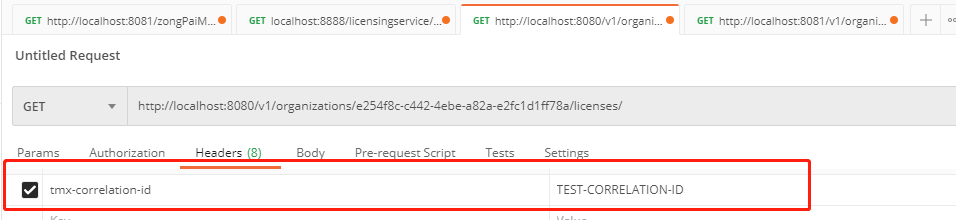

系统崩溃导致服务组件彻底损失，应用程序可以绕过
然而去检测那些服务性能不佳的服务并绕过它是非常困难的，原因：
（1）间歇性问题导致服务性能下降，形成不可逆转势头，逐步降级导致资源耗尽并崩溃
（2）对远程服务的调用时同步的，调用时间可能很长
（3）应用程序经常被设计为处理远程资源的彻底故障，而非部分降级。程序会因为服务小故障而降级，但更有可能因为资源耗尽而崩溃
所以如何处理性能不佳的远程服务 是本节关键，如果没有适当保护，可能会拖垮整个应用程序
客户端弹性模式 重点：远程服务发生错误或表现不佳时保护远程资源（其他微服务调用或数据库查询）的客户端免于崩溃
目标：让客户端快速失败 ，而不消耗数据库连接和线程池的宝贵资源，防止问题向消费者”上游“传播
四种客户端弹性模式：
（1）客户端负载均衡模式：客户端缓存服务发现检索到的微服务端点（Ribbon）
（2）断路器模式：确保客户端不会重复调用失败的服务
远程服务被调用时，断路器会监视，如果调用时间太长，断路器会介入中断调用。
断路器会监视所有调用，如果对某一远程资源调用失败次数过多，断路器就会出现并采取快速失败
（3）后备模式：调用失败时询问是否有可执行的替代方案
远程服务调用失败，通常从另一数据源查找数据，或将用户请求排序以供将来处理
例如：调用商品推荐偏好服务，如果这个服务调用失败，则取检索一个更通用的偏好列表，这个通用列表可能来自不同服务和数据源
（4）舱壁模式：隔离不同的服务调用，确保表现不佳的服务不会耗尽客户端所有资源
将远程资源的调用分到线程池中，降低一个缓慢的远程资源调用拖垮整个应用程序的风险
线程池充当舱壁 ，一个服务响应很慢，这种服务调用的线程池就会饱和并停止处理请求
重要性 场景：
服务C用于读写共享文件系统NAS
服务B连接数据源B，也可以调用服务C
服务A连接数据源A，可以调用服务B
问题：NAS出问题导致访问速度缓慢，导致服务C调用变慢，导致服务B调用数据源B耗尽以及调用服务C变慢，最终也会导致服务A变慢及资源耗尽，从而影响所有的三个服务
解决方法：断路器，服务C性能不佳时，对服务C的特定调用的断路器会跳闸，并且快速失败。服务B有多个端点而只有与服务C交互的端点才会受影响，服务B其余功能是完整的
断路器充当中间人，保护三个应用程序免于崩溃
B不会直接调用C，而是调用委托给断路器，断路器接管并将其包装在原始调用者的线程（由线程池管理）中。客户端也不再直接等待调用完成，而由断路器监视线程，如果线程运行时间太长就终止调用
断路器跳闸的方式：
1.愉快路径：维护定时器，定时器用完之前对完成远程服务调用，一切顺利 B->断路器->C
2.断路器（没有后备）：B->断路器-(在一定时间内服务C上发生足够多的错误，部分降级。调用C时，服务B可以立即接收到错误消息而不调用C )->C
3.断路器（带有后备）：B不去请求断路器调用服务C，而选择快速失败，或者执行替代代码（后备）。服务C也获得一个恢复的机会，让少量请求通过并重试，防止因降级发生级联死亡
断路器提供的能力：
（1）快速失败
（2）优雅地失败
（3）无缝恢复
Hystrix
引入Hystrix依赖
通过Hystrix注解来运用断路器模式包装远程调用
远程资源上定制断路器。以便为每个调用定制超时，配置断路器“跳闸”之前的故障次数
调用失败或断路器必须中断调用时实现后备策略
使用单独线程池隔离服务调用（舱壁）
搭建许可证服务器，使用Spring Cloud和Hystrix 许可证服务的pom文件中导入Spring Hystrix依赖项和Hystrix核心库
1 2 3 4 5 6 7 8 9 <dependency > <groupId > org.springframework.cloud</groupId > <artifactId > spring-cloud-starter-hystrix</artifactId > </dependency > <dependency > <groupId > com.netflix.hystrix</groupId > <artifactId > hystrix-javanica</artifactId > <version > 1.5.9</version > </dependency >
使用@EnableCircuitBreaker标注许可证服务引导类
1 2 3 4 5 @SpringBootApplication @EnableEurekaClient @EnableCircuitBreaker public class Application }
实现断路器 首先实现许可证数据库的断路器
使用@HystrixCommand，让断路器包装一个Service方法（动态代理），并通过专门处理远程调用的线程池来管理该方法所有调用
1 2 3 4 5 @HystrixCommand public List<License> getLicensesByOrg (String organizationId) return licenseRepository.findByOrganizationId(organizationId); }
这里模拟数据库调用，让3次中的大约1次调用时间超过1000ms
1 2 3 4 5 6 7 8 9 10 11 12 13 14 15 16 17 18 19 private void randomlyRunLong () Random rand = new Random(); int randomNum = rand.nextInt((3 - 1 ) + 1 ) + 1 ; if (randomNum==3 ) sleep(); } private void sleep () try { Thread.sleep(11000 ); } catch (InterruptedException e) { e.printStackTrace(); } } @HystrixCommand public List<License> getLicensesByOrg (String organizationId) randomlyRunLong(); return licenseRepository.findByOrganizationId(organizationId); }
如上图所示，休眠服务的调用时间超过一秒，报错
调用组织微服务的超时 上面讲解了调用数据库的断路器设置，这里讲解许可证服务调用组织服务的断路器设置
标注RestTemplate的调用
1 2 3 4 @HystrixCommand private Organization getOrganization (String organizationId) return organizationRestClient.getOrganization(organizationId); }
定制断路器超时时间 将附加参数传递给@HystrixCommand即可定制断路器
1 2 3 4 5 6 7 8 @HystrixCommand( commandProperties={ @HystrixProperty(name="execution.isolation.thread.timeoutInMilliseconds", value="12000")}) public List<License> getLicensesByOrg (String organizationId) randomlyRunLong(); return licenseRepository.findByOrganizationId(organizationId); }
后备处理 服务出现故障后，开发人员有机会拦截故障，并选择替代方案
1 2 3 4 5 6 7 8 9 10 11 12 13 14 15 16 17 private List<License> buildFallbackLicenseList (String organizationId) List<License> fallbackList = new ArrayList<>(); License license = new License() .withId("0000000-00-00000" ) .withOrganizationId( organizationId ) .withProductName("Sorry no licensing information currently available" ); fallbackList.add(license); return fallbackList; } @HystrixCommand(fallbackMethod = "buildFallbackLicenseList") public List<License> getLicensesByOrg (String organizationId) randomlyRunLong(); return licenseRepository.findByOrganizationId(organizationId); }
继续使用随机休眠方法，发现调用失败后不会报错，而是执行了替代方法
实现舱壁模式 多个微服务调用可能默认使用同一批线程，高并发场景下大量请求导致所有线程被刷爆，同时堵塞新请求，导致Java容器崩溃。
舱壁模式将远程资源调用隔离在它们自己的线程池中，以便控制单个表现不佳的服务
使用@HystrixCommand注解实现隔离线程池。注解代码完成以下操作
（1）为getLicensesByOrg方法调用建立单独线程池
（2）设置线程池中的线程数
（3）设置单个线程繁忙时可排队的请求数的队列大小
1 2 3 4 5 6 7 8 9 10 11 12 13 14 @HystrixCommand( threadPoolKey = "licenseByOrgThreadPool",//请求建立新线程池，定义线程池唯一名称 threadPoolProperties = { @HystrixProperty(name = "coreSize",value="30"),//定义线程池中线程最大数量 @HystrixProperty(name="maxQueueSize", value="10")//线程池前的队列，对传入请求排队。一旦超过该大小，接下来的请求都将失败，直到队列中有空间 } ) public List<License> getLicensesByOrg (String organizationId) logger.debug("LicenseService.getLicensesByOrg Correlation id: {}" , UserContextHolder.getContext().getCorrelationId()); randomlyRunLong(); return licenseRepository.findByOrganizationId(organizationId); }
注意，maxQueueSize设置成-1时，使用SynchronousQueue保存传入的请求，设置成大于1时，导致Hystrix使用Java LinkedBlockingQueue，允许线程忙于处理请求时也能对请求进行排毒
Hystrix允许使用queueSizeRejectionThreshold属性动态更改队列大小，但只有maxQueueSize为0时才能使用这个
微调Hystrix 不仅如此，Hystrix监控调用失败次数，失败次数多，Hystrix还会在请求发送到远程资源之前就自动阻止
原因：1.远程资源的性能问题，以防止等待超时，从而显著降低调用服务导致的资源耗尽问题和崩溃的风险
2.保持服务负载，不会使服务彻底崩溃，快速失败给了性能下降的系统一些时间去进行恢复
1 2 3 4 5 6 7 断路器决策过程 出现错误，开始一个10s活动窗口计时器（可配置） 查看10s内的总调用数量，调用次数不超过默认值继续让调用通过 超过最少调用次数，则查看整体故障百分比，该百分比超过错误阈值，则出发断路器，使将来几乎所有调用都失败 如果未达到该阈值，10s窗口过去后重置断路器统计信息 调用一个跳闸服务器时，开始一个新的活动窗口（可配置5s），每隔5s调用有问题的远程服务 如果调用成功则重置断路器，重新让调用通过，如果失败，保持断路器断开，并在另一个5s窗口继续尝试
根据这些，开发人员可使用5个属性定制断路器行为
1 2 3 4 5 6 7 8 9 10 11 12 13 14 15 16 17 18 19 @HystrixCommand(fallbackMethod = "buildFallbackLicenseList", threadPoolKey = "licenseByOrgThreadPool", threadPoolProperties = {@HystrixProperty(name = "coreSize",value="30"), @HystrixProperty(name="maxQueueSize", value="10")}, commandProperties={ @HystrixProperty(name="circuitBreaker.requestVolumeThreshold", value="10"),//控制10s之内必须发生的连续调用数量 @HystrixProperty(name="circuitBreaker.errorThresholdPercentage", value="75"),//超过最少调用数后，调用失败所占总调用数的百分比，若超过则跳闸 @HystrixProperty(name="circuitBreaker.sleepWindowInMilliseconds", value="7000"),//跳闸之后，每隔多长的时间可以允许一个调用通过，以便查看服务是否健康 @HystrixProperty(name="metrics.rollingStats.timeInMilliseconds", value="15000"),//控制Hystrix监视服务调用问题的窗口大小 @HystrixProperty(name="metrics.rollingStats.numBuckets", value="5")} //在定义的滚动窗口中收集统计信息的次数（这里桶数量有5个，要求能被活动窗口时间整除，这里每个桶长度为15s/5=3s，统计信息将收集到这个5个3s长度的桶内，代表窗口内监控故障的时间） ) public List<License> getLicensesByOrg (String organizationId) logger.debug("LicenseService.getLicensesByOrg Correlation id: {}" , UserContextHolder.getContext().getCorrelationId()); randomlyRunLong(); return licenseRepository.findByOrganizationId(organizationId); }
重新审视Hystrix配置 3个Hystrix配置级别：
（1）整个应用程序级别的默认值
（2）类级别的默认值
（3）类中定义的线程池级别
@DefaultProperties在类上配置默认值，让类中所有方法都遵循类上的默认值配置
1 生产环境中，Hystrix数据一般都在Spring Cloud Config中配置
线程上下文与Hystrix @HystrixCommand隔离策略：
（1）THREAD
每个Hystrix命令都在一个单独线程池中执行，不与父线程共享，保证线程调用可以被中断而不影响父线程其他活动
（2）SEMAPHORE
Hystrix管理@HystrixCommand注解保护的分布式调用，不需启动新线程（轻量级隔离级别，适用于服务量很大的异步IO编程模型），调用超时会中断父线程。中断父线程导致开发人员无法捕获异常
隔离策略可以在@HystrixCommand注解中加入commandProperties属性，设置隔离级别
ThreadLocal 问题场景：THREAD隔离级别，Hystrix不会将父线程上下文传播到Hystrix命令管理的线程中
问题复现
在@HystrixCommand包裹的方法（子线程）中，用日志打印父线程上下文存储的信息
1 2 3 4 5 6 7 8 9 10 11 12 13 14 15 16 17 18 19 20 21 22 23 24 25 26 27 28 @Component public class UserContextFilter implements Filter private static final Logger logger = LoggerFactory.getLogger(UserContextFilter.class); @Override public void doFilter (ServletRequest servletRequest, ServletResponse servletResponse, FilterChain filterChain) throws IOException, ServletException { HttpServletRequest httpServletRequest = (HttpServletRequest) servletRequest; UserContextHolder.getContext().setCorrelationId( httpServletRequest.getHeader(UserContext.CORRELATION_ID) ); UserContextHolder.getContext().setUserId(httpServletRequest.getHeader(UserContext.USER_ID)); UserContextHolder.getContext().setAuthToken(httpServletRequest.getHeader(UserContext.AUTH_TOKEN)); UserContextHolder.getContext().setOrgId(httpServletRequest.getHeader(UserContext.ORG_ID)); logger.debug("UserContextFilter Correlation id: {}" , UserContextHolder.getContext().getCorrelationId()); filterChain.doFilter(httpServletRequest, servletResponse); } @Override public void init (FilterConfig filterConfig) throws ServletException @Override public void destroy () }
1 2 3 4 5 6 7 8 9 10 11 12 13 14 15 16 17 18 19 20 21 22 23 24 25 public class UserContextHolder private static final ThreadLocal<UserContext> userContext = new ThreadLocal<UserContext>(); public static final UserContext getContext () UserContext context = userContext.get(); if (context == null ) { context = createEmptyContext(); userContext.set(context); } return userContext.get(); } public static final void setContext (UserContext context) Assert.notNull(context, "Only non-null UserContext instances are permitted" ); userContext.set(context); } public static final UserContext createEmptyContext () return new UserContext(); } }
接着，在Hystrix线程管理的方法和上述Servlet过滤器（父线程）方法中分别增加打印日志功能，查看HTTP头传来的信息

得到结果
1 2 3 c.t.licenses.utils.UserContextFilter: UserContextFilter Correlation id: TEST-CORRELATION-ID c.t.l.c.LicenseServiceController: LicenseServiceController Correlation id: TEST-CORRELATION-ID LicenseService.getLicensesByOrg Correlation id:
发现被@HystrixCommand包裹的方法获取不到关联ID的值（父线程ThreadLocal存储的信息）
而Hystrix和Spring Cloud提供了一种机制，可将父线程上下文传播到Hystrix管理的线程
HystrixConcurrrencyStrategy实战 Hystrix允许的一种自定义并发策略。
该策略将Hystrix调用包装起来，并允许开发人员将附加的父线程上下文注入HystrixCommand管理的线程中
（1）定义自定义Hystrix并发策略类
（2）定义Callable类，将UserContext注入Hystrix命令中
（3）配置Spring cloud以使用自定义Hystrix并发策略
自定义Hystrix并发策略类 1 2 3 4 5 6 7 8 9 10 11 12 13 14 15 16 17 18 19 20 21 22 23 24 25 26 27 28 29 30 31 32 33 34 35 36 37 38 39 40 41 42 43 44 45 46 47 48 49 50 51 public class ThreadLocalAwareStrategy extends HystrixConcurrencyStrategy private HystrixConcurrencyStrategy existingConcurrencyStrategy; public ThreadLocalAwareStrategy ( HystrixConcurrencyStrategy existingConcurrencyStrategy) this .existingConcurrencyStrategy = existingConcurrencyStrategy; } @Override public BlockingQueue<Runnable> getBlockingQueue (int maxQueueSize) return existingConcurrencyStrategy != null ? existingConcurrencyStrategy.getBlockingQueue(maxQueueSize) : super .getBlockingQueue(maxQueueSize); } @Override public <T> HystrixRequestVariable<T> getRequestVariable ( HystrixRequestVariableLifecycle<T> rv) return existingConcurrencyStrategy != null ? existingConcurrencyStrategy.getRequestVariable(rv) : super .getRequestVariable(rv); } @Override public ThreadPoolExecutor getThreadPool (HystrixThreadPoolKey threadPoolKey, HystrixProperty<Integer> corePoolSize, HystrixProperty<Integer> maximumPoolSize, HystrixProperty<Integer> keepAliveTime, TimeUnit unit, BlockingQueue<Runnable> workQueue) return existingConcurrencyStrategy != null ? existingConcurrencyStrategy.getThreadPool(threadPoolKey, corePoolSize, maximumPoolSize, keepAliveTime, unit, workQueue) : super .getThreadPool(threadPoolKey, corePoolSize, maximumPoolSize, keepAliveTime, unit, workQueue); } @Override public <T> Callable<T> wrapCallable (Callable<T> callable) { return existingConcurrencyStrategy != null ? existingConcurrencyStrategy .wrapCallable(new DelegatingUserContextCallable<T>(callable, UserContextHolder.getContext())) : super .wrapCallable(new DelegatingUserContextCallable<T>(callable, UserContextHolder.getContext())); } }
除了复用Spring Cloud已经定义好的HystrixConcurrencyStrategy方法，还要传递给callable实现DelegatingUserContextCallable，
将UserContext这个执行用户REST服务 的父线程，设置成保护正在进行工作的方法 的Hystrix命令线程
定义Callable类，将UserContext注入Hystrix命令中 上述代码将DelegatingUserContextCallable类设置到并发策略当中，该类具体实现如下
1 2 3 4 5 6 7 8 9 10 11 12 13 14 15 16 17 18 19 20 21 22 23 24 25 public final class DelegatingUserContextCallable <V > implements Callable <V > private final Callable<V> delegate; private UserContext originalUserContext; public DelegatingUserContextCallable (Callable<V> delegate, UserContext userContext) this .delegate = delegate; this .originalUserContext = userContext; } public V call () throws Exception UserContextHolder.setContext( originalUserContext ); try { return delegate.call(); } finally { this .originalUserContext = null ; } } public static <V> Callable<V> create (Callable<V> delegate, UserContext userContext) return new DelegatingUserContextCallable<V>(delegate, userContext); } }
调用Hystrix保护的方法后，
（1）Hystrix和Spring Cloud将实例化DelegatingUserContextCallable类的一个实例
（2）该实例传入Hystrix命令池管理的线程调用的Callable类。如上述代码，该Callable类存储在名为delegate的Java属性中
call()方法在调用Hystrix保护的方法前调用
call方法中，UserContext从发起调用的父线程传递出去，在DelegatingUserContextCallable实例创建时设置，在类的call方法中传递出去
call方法的setContext设置UserContext，将UserContext存储在ThreadLocal变量中，该ThreadLocal特定于正在运行的Hystrix线程中
设置完成后，就会调用Callable类的call方法，即Hystrix注解保护的方法
配置Spring Cloud，使用自定义Hystrix并发策略 刚才的工作：
（1）实现并发策略类，复用已存在的安全策略，重写wrapCallable方法以绑定策略，实现Hystrix线程和父线程上下文相联系
（2）Callable类将ThreadLocal的内容传递给Hystrix管理的线程
配置好自定义并发策略之后，需要将该策略与SpringCloud和Hystrix挂钩，具体如下
1 2 3 4 5 6 7 8 9 10 11 12 13 14 15 16 17 18 19 20 21 22 23 24 25 26 27 @Configuration public class ThreadLocalConfiguration @Autowired(required = false) private HystrixConcurrencyStrategy existingConcurrencyStrategy; @PostConstruct public void init () HystrixEventNotifier eventNotifier = HystrixPlugins.getInstance() .getEventNotifier(); HystrixMetricsPublisher metricsPublisher = HystrixPlugins.getInstance() .getMetricsPublisher(); HystrixPropertiesStrategy propertiesStrategy = HystrixPlugins.getInstance() .getPropertiesStrategy(); HystrixCommandExecutionHook commandExecutionHook = HystrixPlugins.getInstance() .getCommandExecutionHook(); HystrixPlugins.reset(); HystrixPlugins.getInstance().registerConcurrencyStrategy(new ThreadLocalAwareStrategy(existingConcurrencyStrategy)); HystrixPlugins.getInstance().registerEventNotifier(eventNotifier); HystrixPlugins.getInstance().registerMetricsPublisher(metricsPublisher); HystrixPlugins.getInstance().registerPropertiesStrategy(propertiesStrategy); HystrixPlugins.getInstance().registerCommandExecutionHook(commandExecutionHook); } }
最后重新编译运行项目，发现在Hystrix保护的方法中可以获取到父线程ThreadLocal的内容了